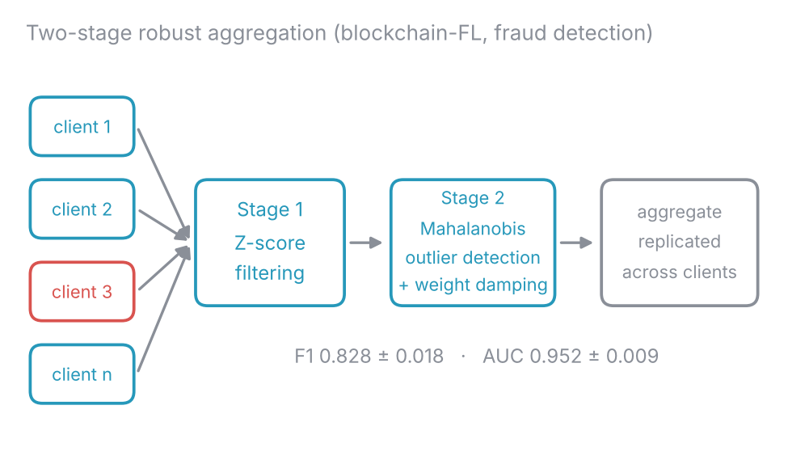

Blockchain-federated learning
Adaptive multi-metric aggregation for cost-efficient and fair blockchain-federated learning
Dec 2025 – Oct 2026 · Applied Intelligence (Springer)
Ripunjay Sharma, Shabd Sahay, Yatendra Sahu, Gagan Vishwakarma, Arpita Bhargava
Federated Learning · Blockchain · Outlier Detection · Fraud Detection

key results
| F1-score | 0.828 ± 0.018 |
|---|---|
| AUC | 0.952 ± 0.009 |
what I did
- Built a framework that jointly optimizes accuracy, F1-score and weight dampening for fraud-detection data.
- Designed a two-stage aggregation pipeline combining Z-score filtering and Mahalanobis-distance-based outlier detection with weight damping, replicated across clients in a hybrid architecture.
- Achieved an F1-score of 0.828 (±0.018) and AUC of 0.952 (±0.009) under a stable heterogeneous client distribution.